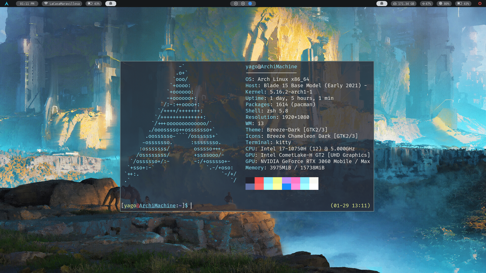

What is AYGO-OS?
AYGO-OS is just another Linux distribution, made on top of Arch Linux. It uses window managers and lightweight applications, which makes it super fast. With pre-configured settings, AYGO-OS provides you the best out of the box window manager experience.

Features
Tiling Windows
Axyl focuses fully on tiling WMs, so we can give you
the best experience for advanced users.
Solid Software
Axyl focuses fully on tiling WMs, so we can give you
the best experience for advanced users.
Minimal Base
Axyl focuses fully on tiling WMs, so we can give you
the best experience for advanced users.